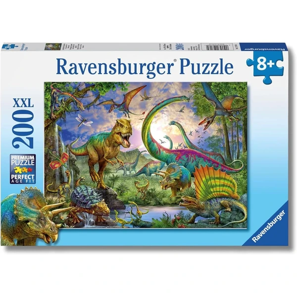
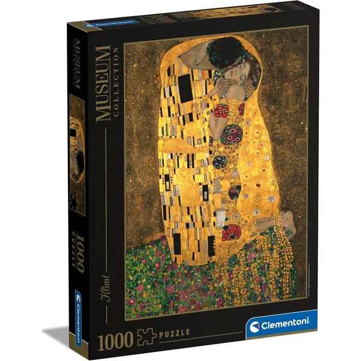
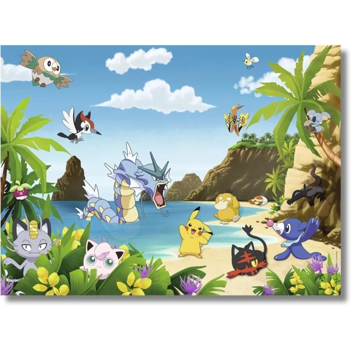
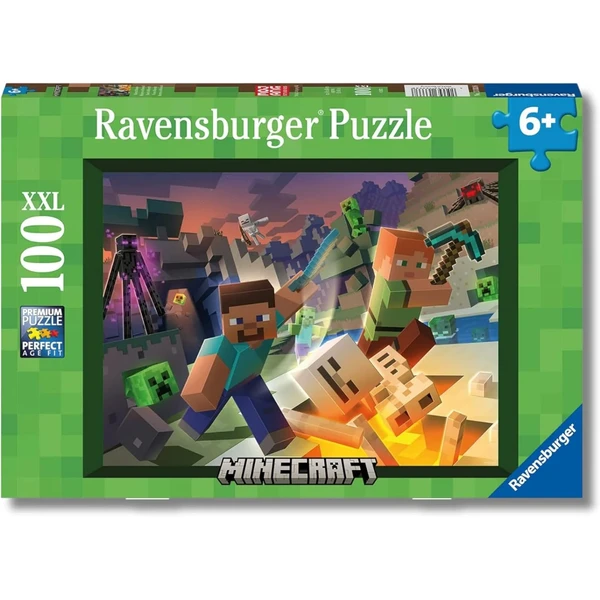
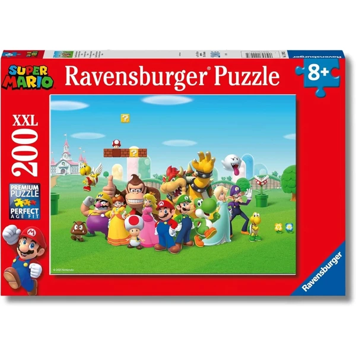
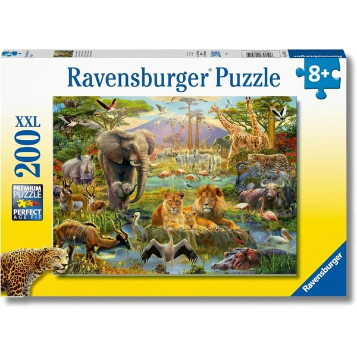
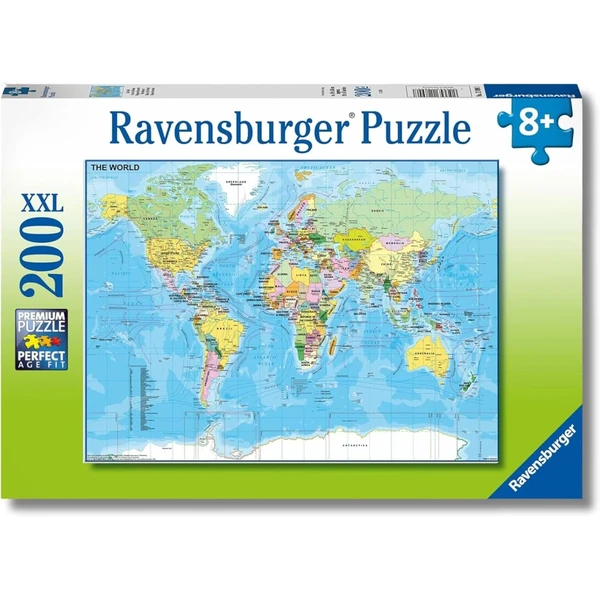

A los 8 años los puzzles de 300 a 500 piezas ofrecen un buen reto, y el niño ya combina varias estrategias —bordes, colores, detalles— de forma bastante autónoma. Algunos disfrutan completando puzzles en varios días como un pequeño proyecto personal, mientras que otros prefieren la variante en equipo. En esta selección encontrarás puzzles pensados para esta edad.
¿Qué desarrollan los puzzles a los 8 años?
Combinar varias estrategias de forma autónoma muestra un pensamiento organizado y una paciencia cada vez mayor.
- Concentración
- Paciencia
- Memoria visual
- Visión espacial
- Estrategia
- Constancia

Ravensburger Reino de los Gigantes
Un puzzle XXL de 200 piezas con escenas de criaturas gigantes, pensado para esta edad. Incluye póster de referencia y tecnología Soft-Click para un encaje preciso.
⭐ ¿Por qué nos gusta?
- ✔ 200 piezas de tamaño XXL.
- ✔ Tecnología Soft-Click para un encaje perfecto.
- ✔ Temática de fantasía muy vistosa.
💬 Lo que más destacan las familias
Muchos padres coinciden en que el tamaño de las piezas es justo el adecuado para esta edad, ni tan simple ni tan pequeño. La temática de gigantes suele ser un acierto tanto para niños como para niñas.
Ver en Amazon

Clementoni Puzzle 1000 Piezas
Un puzzle de 1000 piezas con una imagen muy detallada, pensado para quienes ya tienen soltura montando puzzles de menor tamaño. Fabricado con materiales reciclables y un troquelado muy preciso.
⭐ ¿Por qué nos gusta?
- ✔ 1000 piezas para un reto mayor.
- ✔ Troquelado preciso, encaje muy limpio.
- ✔ Fabricado con materiales reciclables.
💬 Lo que más destacan las familias
Una de las cosas más comentadas es la calidad de impresión de la imagen, que se aprecia mucho una vez montado. Se recomienda para quienes ya buscan un desafío mayor que los puzzles más sencillos.
Ver en Amazon

Ravensburger Puzzle Pokémon
Un puzzle XXL de 200 piezas con personajes Pokémon, con póster de referencia y tecnología Soft-Click para que cada pieza encaje con precisión.
⭐ ¿Por qué nos gusta?
- ✔ 200 piezas de tamaño XXL.
- ✔ Tecnología Soft-Click para un encaje perfecto.
- ✔ Temática Pokémon muy popular en esta edad.
💬 Lo que más destacan las familias
Entre los comentarios más habituales aparece lo satisfactorio que resulta el resultado final para los fans de Pokémon. También se valora la calidad de las piezas, que aguantan bien el montaje y desmontaje.
Ver en Amazon

Ravensburger Puzzle Minecraft
Un puzzle de 100 piezas con temática Minecraft, que desarrolla motricidad fina y concentración. Incluye póster de referencia y tecnología Soft-Click para un encaje perfecto.
⭐ ¿Por qué nos gusta?
- ✔ 100 piezas XXL de tamaño cómodo para manejar.
- ✔ Tecnología Soft-Click para encajes perfectos.
- ✔ Temática Minecraft muy popular entre los niños.
💬 Lo que más destacan las familias
Los compradores valoran especialmente que el tamaño de las piezas sea cómodo para manejar, sin resultar demasiado sencillo para esta edad. La temática de Minecraft suele ser un acierto seguro entre los aficionados al videojuego.
Ver en Amazon

Ravensburger Puzzle Super Mario
Un puzzle XXL de 200 piezas con la temática de Super Mario, con póster explicativo y piezas de tamaño cómodo. La tecnología Soft-Click facilita el encaje mientras se arma.
⭐ ¿Por qué nos gusta?
- ✔ 200 piezas XXL, cómodas de manejar.
- ✔ Tecnología Soft-Click para encajes precisos.
- ✔ Temática Super Mario muy popular.
💬 Lo que más destacan las familias
Lo que más suele gustar es lo entretenido que resulta armar una escena de un videojuego tan conocido. Las piezas resistentes también se mencionan como un acierto para esta edad.
Ver en Amazon

Ravensburger Animales de la Sabana
Un puzzle XXL de 200 piezas con animales de la sabana africana, ideal para quienes disfrutan de la naturaleza y los animales. Incluye póster de referencia para guiar el montaje.
⭐ ¿Por qué nos gusta?
- ✔ 200 piezas XXL con animales africanos.
- ✔ Póster de referencia incluido.
- ✔ Ideal para amantes de la naturaleza.
💬 Lo que más destacan las familias
Una característica muy mencionada es lo vistosa que resulta la imagen final, con colores muy vivos. Se recomienda especialmente para los niños fascinados por los animales salvajes.
Ver en Amazon

Educa Puzzle Stitch Disney
Un puzzle de 300 piezas con la imagen de Stitch, fabricado con tintas vegetales respetuosas con el medio ambiente. Piezas grandes y bien acabadas, pensadas para una manipulación segura.
⭐ ¿Por qué nos gusta?
- ✔ 300 piezas con el personaje Stitch.
- ✔ Fabricado con tintas vegetales ecológicas.
- ✔ Piezas grandes y de manipulación segura.
💬 Lo que más destacan las familias
No es raro encontrar comentarios sobre lo bien acabadas que están las piezas, con colores muy fieles al personaje. Los fans de Stitch suelen quedar muy contentos con el resultado final.
Ver en Amazon

Ravensburger Puzzle Mapa del Mundo
Un puzzle XXL de 200 piezas con el mapa del mundo, ideal para combinar el juego con el aprendizaje de geografía. Incluye póster de referencia y tecnología Soft-Click.
⭐ ¿Por qué nos gusta?
- ✔ 200 piezas con el mapa del mundo.
- ✔ Combina juego y aprendizaje de geografía.
- ✔ Tecnología Soft-Click para un encaje preciso.
💬 Lo que más destacan las familias
Un detalle que aparece una y otra vez es que combina bien el entretenimiento con el aprendizaje de países y continentes. Los padres valoran especialmente que sea una forma amena de repasar geografía.
Ver en Amazon